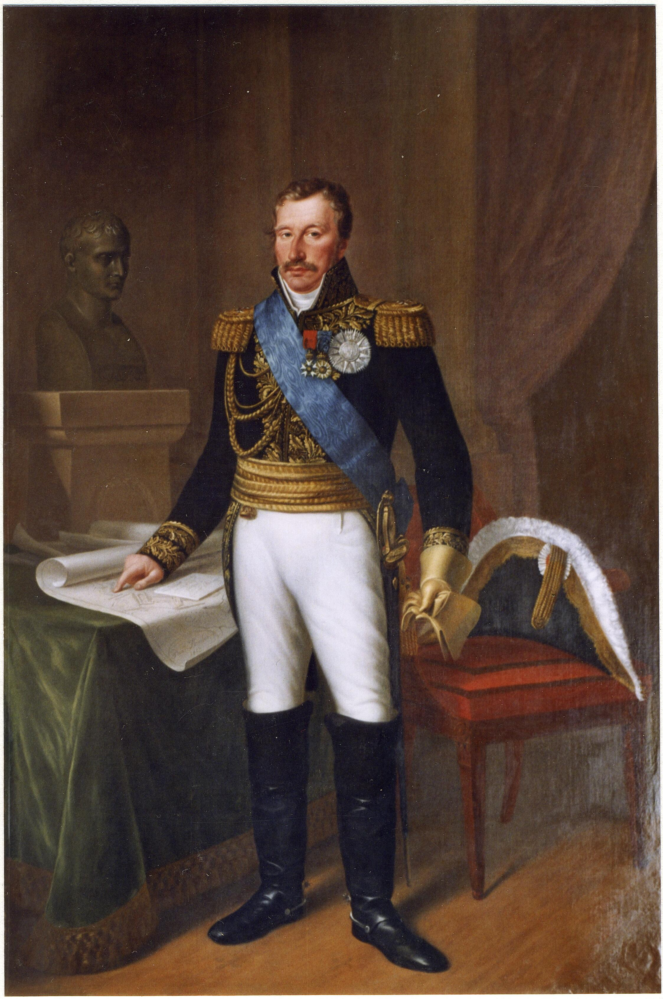
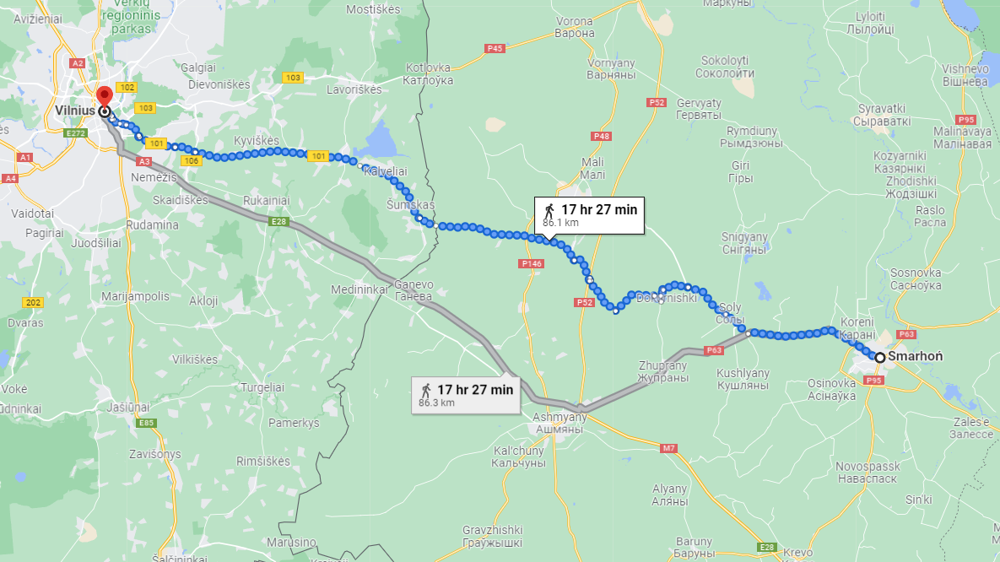
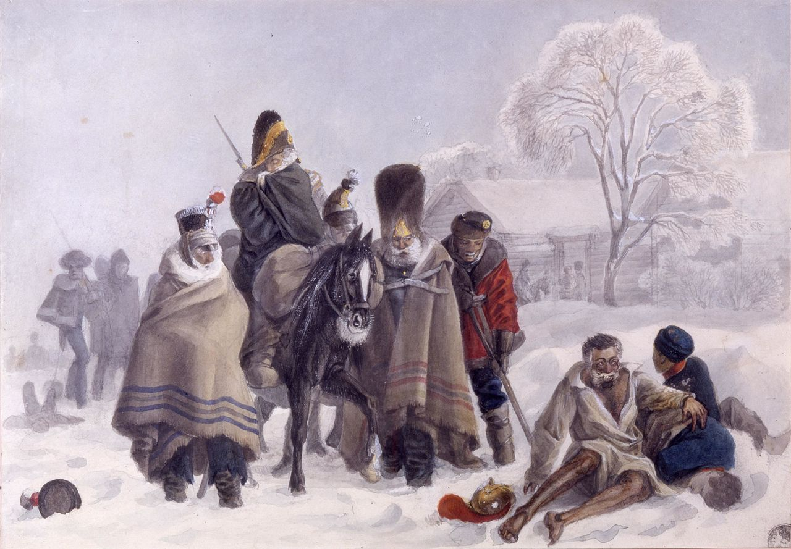
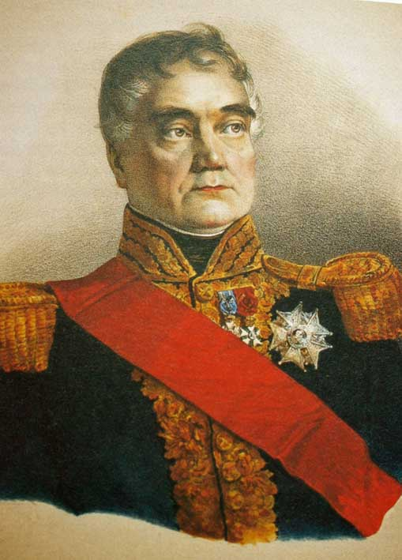

떠나는 자와 남는 자 - 빌나 앞에서
게시: 2021-11-22T06:30:10+09:00
나폴레옹이 12월 5일 스모르곤(Smarhonʹ 또는 Smorgon)에 도착하여 어떤 농가에서 잠깐 숨을 돌리고 있을 때, 그를 찾아 서쪽에서 온 사람이 나타났습니다. 동프로이센과 리투아니아의 주지사로서 빌나에서 각종 행정 업무를 보고 있던 호겐도르프(Dirk van Hogendorp)였습니다. 호겐도르프는 나폴레옹이 빌나의 마레(Maret)에게 주문했던 사항, 즉 10만 병력이 3달간 먹을 식량과 5만 명을 무장시킬 수 있는 머스켓 소총과 탄약, 군복, 군화, 기타 장비류는 물론, 많지는 않지만 보충용 군마들도 준비되어 있다는 반가운 소식을 전하러 온 것이었습니다. 더 반가운 소식도 있었습니다. 호겐도르프는 독일에서 새로 편성된 2개 사단이 막 빌나에 도착했는데, 이들을 빌나 외곽에 부채 모양으로 전개 배치하여 그랑다르메의 후퇴를 엄호하도록 조치를 취했다는 것이었습니다.

(호겐도르프입니다. 그는 네덜란드 출신인 그는 젊어서 네덜란드 해군에서 장교로 입대하여 현재의 인도네시아인 자바(Java) 섬의 네덜란드 동인도회사(Vereenigde Oost Indische Compagnie, VOC)에서 일하기도 했습니다. 여기서 그는 네덜란드가 현지인들을 무자비하게 착취하는 것을 보고 충격을 받아 그런 식민 제도의 개혁을 촉구하는 제안을 여러개 반복해서 냈다가 현지 동인도회사 총독에게 위험 인물로 찍혀 감금되었다가 탈옥하여 네덜란드로 귀국하는 등 젊어서부터 계몽적인 경향을 보여주었습니다. 이후 희곡을 여러편 쓰는 등 여러가지 활동을 하다 러시아 주재 네덜란드 대사를 거쳐 네덜란드 국방부 장관까지 역임했습니다. 그러다 나폴레옹이 네덜란드를 병합하면서 그도 나폴레옹의 관료 체계 하에 편입되어 어찌어찌 장군 계급을 받기는 했습니다만, 그는 절대 제대로 된 군인은 아니었습니다. 나중에 보실 빌나의 비극은 상당 부분 호겐도르프의 책임이었지요. 나폴레옹 몰락 이후 그는 네덜란드로 돌아오지 못하고 브라질로 건너가서 거기서 살았는데, 아이러니컬하게도 그는 노예 소유주가 되어 커피와 오렌지 농장을 운영했다고 합니다.)
이런 소식을 접한 나폴레옹은 이제 때가 되었다고 생각하고 그 날 저녁 휘하 원수들을 불러 모았습니다. 그는 모두가 짐작하고 있었지만 다들 모르는 척 하고 있던 사실, 즉 나폴레옹이 이제 그랑다르메를 떠나 파리로 먼저 출발한다는 소식을 공표했습니다. 그리고 놀랍게도 나폴레옹은 부하들에게 자신의 실수, 즉 모스크바에서 너무 오래 지체한 점에 대해 사과했다고 합니다. 그때 원수들은 나폴레옹이 혼자 그 얼음 지옥을 탈출하겠다는 말을 듣고서도 동요는 커녕 모두 그 계획을 적극 지지했는데, 이는 꼭 나폴레옹의 솔직한 사과에 감동했기 때문은 아니었습니다.

(스모르곤은 현재의 국경 기준으로 벨라루스-리투아니아 국경 인근에 있는 소도시로서, 이제 딱 2~3일만 더 행군하면 빌나에 도착할 수 있는 위치였습니다.) 이미 그랑다르메가 거의 붕괴되어버린 지금, 나폴레옹이 빌나에서 할 수 있는 일은 그리 많지 않았습니다. 나폴레옹이 그의 능력을 발휘할 수 있는 곳은 빌나가 아니라 파리였습니다. 러시아 원정군의 패망 소식이 곧 유럽 전역으로 퍼져나갈텐데 그럴 경우 나폴레옹의 무력 앞에서 고개를 숙이고 있던 유럽 각국이 들고 일어날 것이 뻔했습니다. 또 러시아군이 네만 강을 넘어 중부 유럽으로 침공을 시작할 수도 있었습니다. 그런 재앙을 막기 위해서는 프랑스와 독일, 이탈리아에서 새로운 군대를 편성하고 무기와 자금을 조달해야 했는데, 그러자면 나폴레옹이 반드시 파리에 돌아가야 했습니다.

(1812년 12월, 스모르곤을 통과 중인 그랑다르메를 그린 파벨 뒤 포르(Christian Wilhelm von Faber du Faur)라는 분이 그린 석판화입니다. 파벨 뒤 포르는 남부 독일인 뷔르템베르크 출신의 화가인데, 나폴레옹의 그랑다르메에 배속되어 전쟁의 참상을 직접 체험하며 생생한 그림을 그렸습니다.) 나폴레옹은 자신을 대신하여 빌나에서 그랑다르메의 잔존 병력을 통솔할 총사령관으로 누구를 정하느냐에 대해 잠깐 고민했습니다. 러시아 원정이 실패로 돌아간 지금의 상황에서 필요한 총사령관은 기기묘묘한 작전을 짜내거나 불굴의 의지로 돌격을 감행할 명장이나 용장이 아니라 지친 병사들을 다독거리고 나폴레옹의 깃발 아래 사람들의 마음을 다시 모을 수 있는 덕장이었습니다. 무엇보다, 나폴레옹의 말에 절대 복종하면서도 호랑이 같은 쟁쟁한 원수들을 잘 다룰 수 있는 권위를 갖춘 사람이어야 했습니다. 나폴레옹은 처음에는 자신의 의붓아들인 이탈리아 부왕(副王, Vice-roi)이자 제4 군단장인 외젠을 임명하려 했습니다. 흔히 선입견을 가지고 보기 쉽습니다만, 외젠의 통솔력은 그렇게 나쁜 편은 아니어서 아스페른-에슬링 전투 때도 그랬고 최근의 크라스니 전투 때에도 지휘가 서투른 편은 아니었습니다. 무엇보다, 외젠은 나폴레옹의 인척이라는 점에 있어서나 그 온화하고 공정한 성품에 있어서나 부하들의 신뢰를 받고 있었습니다. 나폴레옹은 외젠의 어머니인 조세핀과 이혼을 한 뒤에도 외젠을 가까이 두고 우대했는데, 그게 꼭 조세핀에 대한 의리 때문은 아니었습니다. 그러나 결국 나폴레옹은 그의 매제이자 나폴리왕인 뮈라를 총사령관으로 임명했습니다. 사실 그게 의전상 맞았습니다. 나폴레옹을 제외하고는 뮈라가 유일한 국왕으로서 뮈라의 의전상 서열이 가장 높았던 것입니다. 하지만 뮈라는 총탄이 빗발치는 전장에서 돌격을 이끌기에는 둘째 가면 서러울 용장이었지만, 결코 현재 상황에 적절한 총사령관이 아니었습니다. 그래서 나폴레옹은 외젠을 생각했던 것인데, 조금 더 생각해보니 만약 조카뻘에 해당하는데다 지위도 더 낮은 외젠의 명령에 따르라고 한다면 그 상황에서라도 뮈라는 앞뒤 가리지 않고 반란을 일으킬 것 같았습니다. 결국 나폴레옹은 에라 모르겠다 하는 심정으로 뮈라를 총사령관에 임명했습니다. 나폴레옹이 파리로 떠날 때 동행하는 행운을 누린 사람은 별로 많지 않았습니다. 나폴레옹의 마차에 함께 탄 사람은 콜랭쿠르 뿐이었고, 그 마차의 마부석에는 그의 마멜룩 출신 시종인 루스탐(Roustam)과 어떤 폴란드 장교가 앉았습니다. 뒤따르는 마차 2대에 올라탄 사람들은 궁내장관인 뒤록(Géraud Christophe Michel Duroc)과 참모 무통(Georges Mouton), 그리고 비서인 펭(Fain) 남작과 나폴레옹의 시종 콩스탕(Constant)이었습니다. 그런데 이들 말고도 이 마차들에 올라타고 싶어하는 사람은 많았습니다. 일단 외젠은 자신이 총사령관이 될 거라고 은근히 기대하다가 물을 먹자, 실망하여 지휘권을 내려놓고 자신의 궁전이 있는 투리노(Turin)로 돌아가겠다고 청원했습니다. 물론 나폴레옹은 외젠을 잘 타일렀지요. 또 언제나 나폴레옹의 곁을 지켰던 참모장 베르티에도 황제의 곁에는 당연히 자신이 있어야 한다고 주장하며 함께 데려가 주기를 간청했지만, 나폴레옹은 다소 차갑게 이렇게 대답했다고 합니다. "나도 자네가 여기서는 쓸모가 별로 없다는 것을 잘 아네. 하지만 다른 사람들은 그걸 모르지. 게다가 자네의 이름은 군 전체에 꽤 무게감이 있다네."

(뒤록의 초상화입니다. 그는 나폴레옹보다 3살 어렸고, 하급 귀족 출신으로서 나폴레옹과는 죽이 아주 잘 맞는 사이였습니다. 1796년 처음으로 나폴레옹의 참모가 된 이후로 나폴레옹에게 절대적으로 충성했고 나폴레옹도 그를 전적으로 신뢰했습니다. 1804년 나폴레옹이 황제가 된 이후로는 계속 궁내장관, 즉 Grand maréchal du palais로서 나폴레옹이 전쟁에 나갈 때 황제의 모든 살림살이를 도맡는 역할을 했습니다. 그는 1813년 바우첸(Bautzen) 전투에서 포탄에 복부를 맞아 내장이 다 터져나오는 끔찍한 부상을 당해 결국 인근 농가에서 죽었습니다. 그는 죽어가면서도 나폴레옹에게 '이제 작별 인사를 했으니 가시라, 이런 끔찍한 장면을 보시면 안된다'라며 충성을 다했습니다. 나폴레옹은 뒤록이 죽은 농가를 사들여 뒤록을 위한 추모비를 세웠다고 합니다.)

(무통 장군은 아스페른-에슬링의 어려운 전투에서 근위대를 이끌고 오스트리아군을 저지하는 공을 세웠고, 그래서 그때 전투의 주요 배경이 된 로바우 섬의 이름을 따서 로바우 백작(comte de Lobau)이 되었습니다. 이때 그가 나폴레옹의 파리행 마차에 탈 수 있었던 것은 나폴레옹이 그를 특별히 아껴서라기보다는 그가 당시 나폴레옹의 참모 중 하나였기 때문입니다. 그는 드레스덴 전투 이후 오스트리아군의 포로로 나폴레옹의 폐위를 맞이해야 했는데, 백일천하 때도 나폴레옹 편에서 싸웠습니다. 덕분에 부르봉 왕가에 의해 추방되었는데, 그는 끝까지 부르봉 왕가에 저항하여 1830년 7월 혁명 때는 국민방위군에 가담하여 끝내 부르봉 왕가를 쫓아냈습니다. 이후 루이 필립 왕에게 충성하며 원수직에도 올랐습니다.) 나폴레옹이 파리로 먼저 떠나버렸다는 소식은 물론 그가 떠난 뒤인 다음 날에야 전군에 알려졌습니다. 당연히 그 소식에 장교들과 병사들은 크게 실망했고 허탈해했지만, 의외로 나폴레옹 개인에 대한 원망이나 비난 등은 없었다고 합니다. 특히 장교들은 황제가 먼저 파리로 돌아가서 새로운 군대를 조직해야 한다는 필요성을 인정했습니다. 그리고 이제 빌나가 바로 이틀 행군 거리 내에 들어왔고 거기에는 2만의 지원군과 함께 충분한 식량이 준비되어 있으니, 곧 이 극한의 상황에서 벗어날 수 있을 거라는 희망이 생겨났습니다. 여태까지 실망만 주었던 스몰렌스크나 오르샤와는 달리, 빌나는 정말 자신들을 감싸줄 피난처가 될 것이라고 모두들 기대하고 있었습니다. 그러나 이들을 기다리고 있는 것은 참혹한 광경이었습니다. Source : 1812 Napoleon's Fatal March on Moscow by Adam Zamoyski
https://en.wikipedia.org/wiki/Smarhon%CA%B9 https://fr.wikipedia.org/wiki/Georges_Mouton https://en.wikipedia.org/wiki/G%C3%A9raud_Duroc https://en.wikipedia.org/wiki/Dirk_van_Hogendorp_(1761%E2%80%931822)